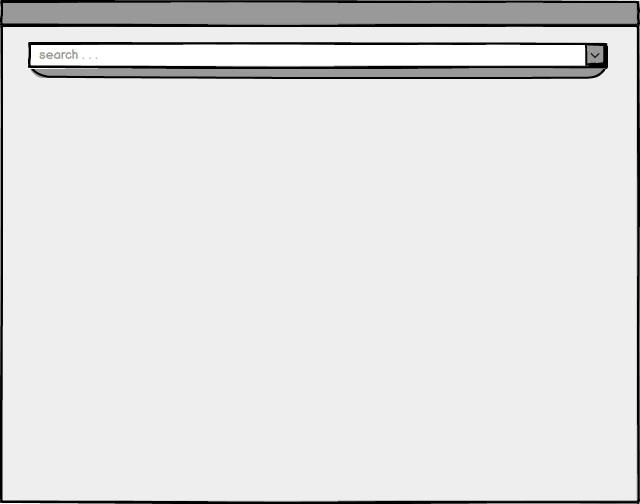
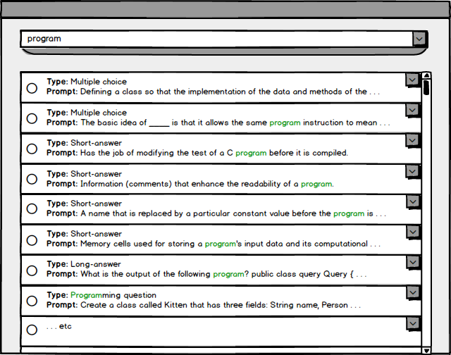
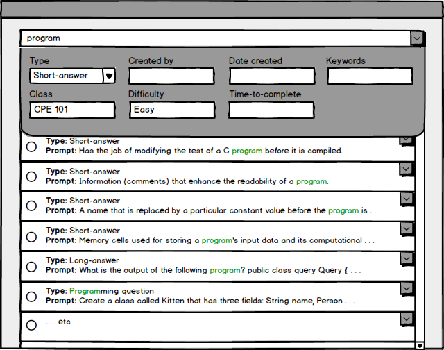
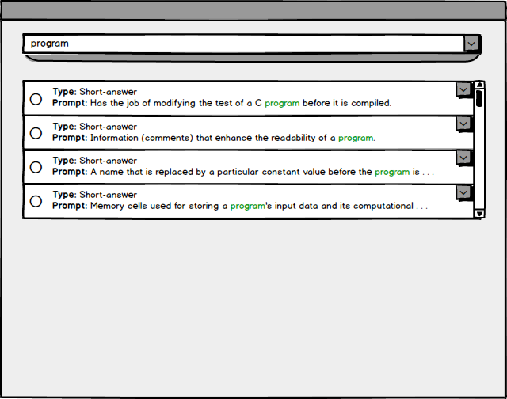

The scenario in this section illustrates an individual user (teacher) changing the displayed question list by entering specific search parameters.
The user clicks on the 'manage questions' option from the main menu. The system responds by displaying the screen in the figure below.

Figure 0: Manage question menu, initial view.
At the top of the screen is a search bar. Below the search bar is where a list of questions from the question bank would be, but initially there are no questions displayed.
The user types program
into the search bar. The system responds by updating the question list.

Figure 1: Results of a simple question search.
The question list populated according to the search parameters specified by the user. In this case, each question listing displayed contains the word program
in either their prompt, keywords, or answer(s).
Now that a number of questions are displayed, the user wants to further refine their search in order to view a specific group of questions.
The user clicks on the arrow at the right-end of the search bar. The system responds by expanding the search bar with additional options.

Figure 2: Question search box expanded with some fields filled.
The newly displayed search dialog shows fields for other question attributes, including difficulty, time to complete, and question type (the complete list of question attributes is detailed in the 'add question' scenario).
The user specifies desired attributes by entering them into the search dialog. The system responds by updating the question list.

Figure 3: Result of search with expanded parameters.
The result of the search is a culled question list containing only questions that meet the specifications of the user. In this case, the questions listed are of type 'Short-answer', are written for the class 'CPE 101', and are rated with 'Easy' difficulty.
{kind=link}